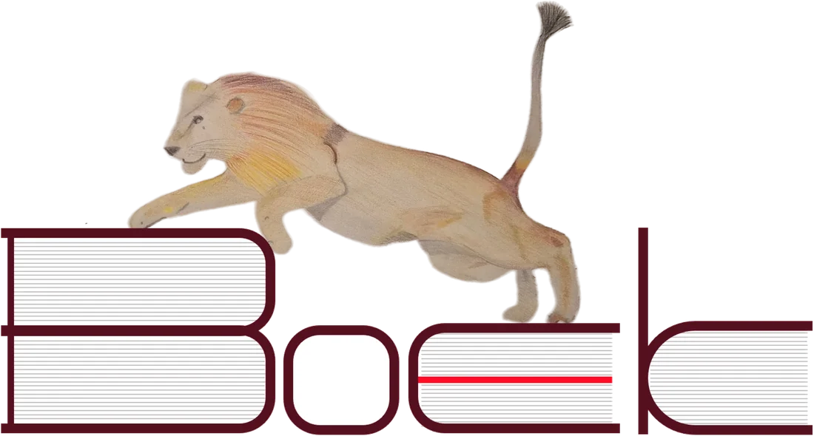
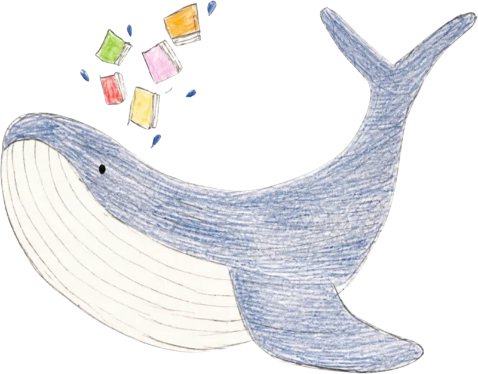
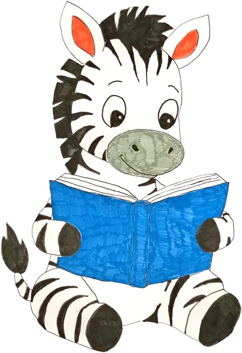
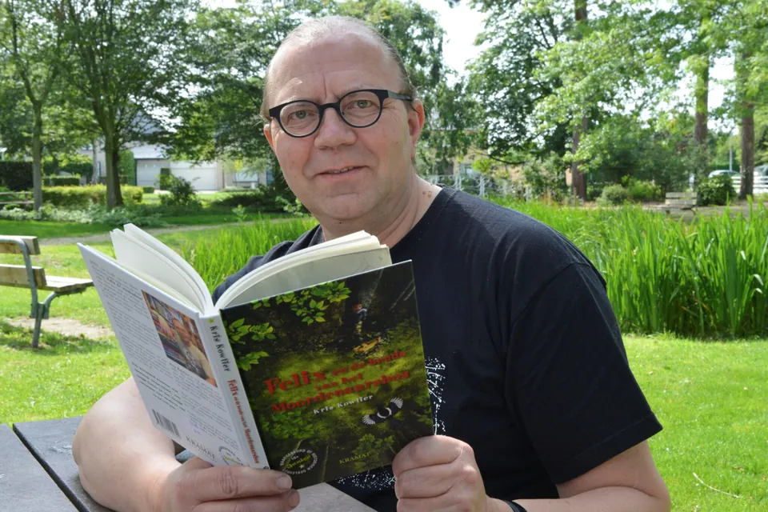

Ontdek. Leer. Fantaseer!
Boekenbeurs
- vrij 13/11 15:00–18:30
- zat 14/11 09:00–17:30
VBS De WassenaardWesternieuwweg 5, 8490 Varsenare

Kom boeken kiezen met je kind.Van elke aankoop gaat 15% naar de ouderraad, voor projecten van de school.
Praktisch
- Wanneer
- Vrijdag 13 november, 15:00–18:30
Zaterdag 14 november, 09:00–17:30 - Waar
- VBS De Wassenaard, Westernieuwweg 5, 8490 Varsenare
- Wat
- Nieuwe boeken voor alle leeftijden, van prentenboek tot jeugdroman, geselecteerd door boekhandel Jeukiboek.
- Voor wie
- Iedereen is welkom: ouders, grootouders, buren en vrienden.
- Betalen
- Bancontact, Payconiq of cash.
Tip: vrijdag direct na school is het het drukst. Liever rustig snuffelen? Kom op zaterdagnamiddag.

Auteur op bezoek

Kris Kowlier
Kris Kowlier schrijft kinderboeken, zoals Felix en de bende van het Moordenaarsbos, en is de man achter Jeukiboek, de boekhandel van onze beurs. Bekijk de boeken van Kris Kowlier.
Lezing door Kris Kowlier voor de leerlingen van het 5e en 6e leerjaar.
Boeken op factuur
Boeken voor je wachtzaal, kinderhoek of als cadeau voor je personeel? Koop op factuur en steun de school.
- Huisarts, tandarts, kinesist, apotheek, kapper of garage
- Kinderopvang, onthaalouders en jeugdbeweging
- Bedrijven: een Sinterklaas- of kerstcadeau dat blijft
Geef aan de kassa je factuurgegevens door, Jeukiboek bezorgt je de factuur.
Wie kwam er al voorlezen?
Elk jaar komt er een auteur of illustrator naar De Wassenaard. Dit jaar is dat Kris Kowlier, de vorige edities waren dat:
- 2025Gerda DendoovenBoeken bij Jeukiboek
- 2024Nico De BraeckeleerBoeken bij Jeukiboek
- 2023Luc DescampsBoeken bij Jeukiboek
- 2022Marc de BelBoeken bij Jeukiboek